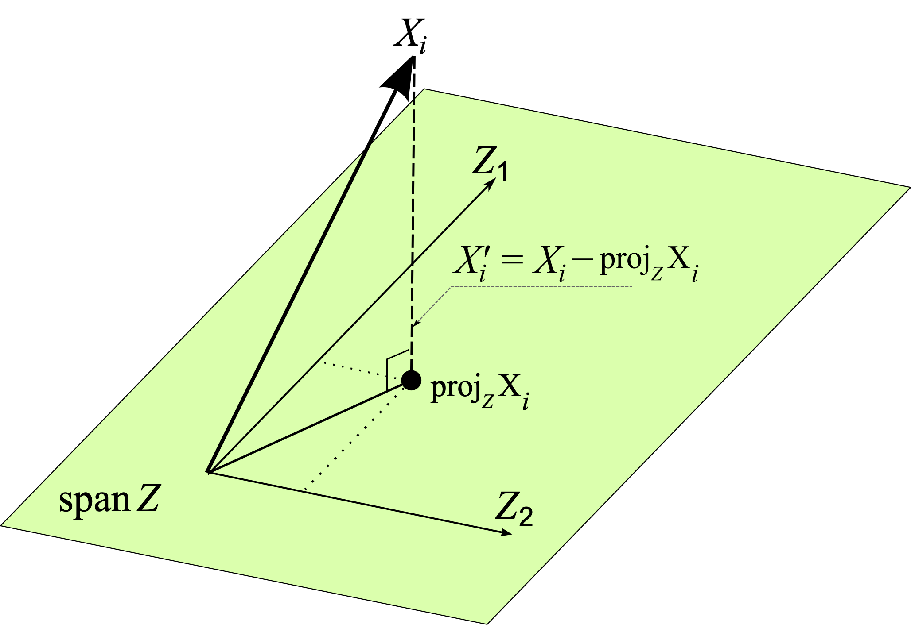

This post assumes some familiarity with the idea of concept erasure and our LEACE concept erasure method. We encourage the reader to consult our arXiv paper for background.
For a PyTorch implementation of this method, see the OracleFitter class in our GitHub repository.
WARNING: Because this erasure transformation depends on the ground truth concept label, it can increase the nonlinearly-extractable information about the target concept inside a representation, even though it eliminates the linearly available information. For this reason, optimizing deep neural networks on top of O-LEACE'd representations is not recommended; for those use cases we recommend vanilla LEACE.
In our paper LEACE: Perfect linear concept erasure in closed form, we derived a concept erasure method that not require access to concept labels at inference time. That is, we can fit an erasure function on a labeled training dataset, then apply the function to unlabeled datapoints. It turns out, however, that we can achieve an even more surgical edit if we have oracle access to the label $\mathbf z$ for each $\mathbf x$. In Theorem 1 below, we derive Oracle LEACE ("O-LEACE"), a closed-form formula for the the nearest $\mathrm X'$ to any $\mathrm X$ such that no linear classifier can do better than chance at predicting $\mathrm Z$ from $\mathrm X'$, or equivalently $\mathrm{Cov}(\mathrm X', \mathrm Z) = \textbf{0}$.
The resulting $\mathrm X'_{\mathrm{LEACE}}$ is "nearest" to $\mathrm X$ with respect to all p.s.d. inner products $\mathbf a^T \mathbf{Mb}$ defined on $\mathbb{R}^d$ simultaneously. This is because, by expressing $\mathrm X$ in a basis that diagonalizes $\mathbf M$, we can decompose the problem into $d$ independent subproblems, one for each component $\mathrm X_i$ of $\mathrm X$. Each subproblem can then be viewed as an orthogonal projection, not in $\mathbb{R}^d$, but in the vector space of scalar, real-valued random variables. For geometric intuition, see the figure below.

Orthogonal projection of $i^{\text{th}}$ component of $\mathrm X$, itself a vector in the random variable Hilbert space $\mathcal H$, onto the span of the components of $\mathrm Z$. The residual $\mathrm X_i - \mathrm{proj}_{\mathcal Z} \mathrm X_i$ is the closest vector to $\mathrm X_i$ orthogonal to, and hence uncorrelated with, $\mathcal Z = \mathrm{span}(\lbrace \mathrm Z_1, \mathrm Z_2 \rbrace)$
Derivation
Prior work has noted that computing an orthogonal projection in a random variable Hilbert space is equivalent to solving an ordinary least squares regression problem. Our theorem is a natural extension of this work: we find that $\mathrm X'_{\mathrm{LEACE}}$ is equal to the OLS residual from regressing $\mathrm X$ on $\mathrm Z$, plus a constant shift needed to ensure that erasing $\mathrm Z$ does not change the mean of $\mathrm X$. Note that the regression problem here is reversed from the usual one: we are predicting $\mathrm X$ from $\mathrm Z$, rather than the other way around.
Theorem 1. Let $\mathcal H$ be the Hilbert space of square-integrable real-valued random variables equipped with the inner product $\langle \xi, \zeta \rangle_{\mathcal H} := \mathbb{E}[\xi \zeta]$. Let $(\mathrm X, \mathrm Z)$ be random vectors in $\mathcal H^d$ and $\mathcal H^k$ respectively. Then for every p.s.d. inner product $\langle \mathbf a, \mathbf b \rangle_{\mathbf M} = \mathbf a^T \mathbf M \mathbf b$ on $\mathbb{R}^d$, the objective
$$ \mathop{\mathrm{argmin \hspace{0.5em}}}_{\substack{\mathrm X' \in \mathcal H^d}} \mathbb{E} \big| \mathrm X' - \mathrm X \big|^2_{\mathbf M} \quad \mathrm{s.t.} \hspace{0.5em} \mathrm{Cov}(\mathrm X', \mathrm Z) = \mathbf{0} $$
is minimized by the (appropriately shifted) ordinary least squares residuals from regressing $\mathrm X$ on $\mathrm Z$:
$$ \mathrm X'_{\mathrm{LEACE}} = \mathrm X + \mathbf{\Sigma}_{XZ} \mathbf{\Sigma}_{ZZ}^+ \big( \mathbb{E}[\mathrm Z] - \mathrm Z \big). $$
Proof. Assume w.l.o.g. that $\mathrm X$ and $\mathrm X'$ are represented in a basis diagonalizing $\mathbf{M}$, so we may write
$$ \mathbb{E} \big| \mathrm X' - \mathrm X \big|^2_{\mathbf M} = \sum_{i=1}^d m_i \hspace{0.5em} \mathbb{E} \big[ (\mathrm X'_i - \mathrm X_i)^2 \big], \tag{1} $$
where $m_1, \ldots, m_d \ge 0$ are eigenvalues of $\mathbf{M}$. Crucially, each term in this sum is independent from the others, allowing us to decompose the primal problem into $d$ separate subproblems of the form $| \mathrm X_i' - \mathrm X_i |^2_{\mathcal H}$, one for each component $i$ of $(\mathrm X, \mathrm X')$. We may also discard the $m_i$ terms since they are non-negative constants, and hence do not affect the optimal $\mathrm X_i'$ for any $i$.
Factoring out constants. Now consider the subspace $\mathcal C = \mathrm{span}(1) \subset \mathcal H$ consisting of all constant (i.e. zero variance) random variables. Orthogonally decomposing $\mathrm X_i$ along $\mathcal C$ yields $\mathrm X_i = \tilde{\mathrm X}_i + \mu_i$, where $\mu_i = \mathbb{E}[\mathrm X_i] \in \mathcal C$ and $\tilde{\mathrm X}_i = \mathrm X - \mathbb{E}[\mathrm X]_i \in \mathcal C^\perp$, and likewise for $\mathrm X_i'$. Our objective is now
$$ \big | \mathrm X_i' - \mathrm X_i \big |^2_{\mathcal H} = \big | \tilde{\mathrm X}_i' + \mu_{\mathrm X_i}' - \tilde{\mathrm X}_i - \mu_i \big |^2_{\mathcal H} = \big | \mu_i' - \mu_i \big |^2_{\mathcal H} + \big | \tilde{\mathrm X}_i' - \tilde{\mathrm X}_i \big |^2_{\mathcal H}. \tag{2} $$
Since $\mu_i'$ and $\mu_i$ are orthogonal to $\tilde{\mathrm X}_i'$ and $\tilde{\mathrm X}_i$, and the constraint $\mathrm{Cov}(\mathrm X', \mathrm Z) = \mathbf{0}$ is invariant to constant shifts, we can optimize the two terms in Eq. 2 independently. The first term is trivial: it is minimized when $\mu_i' = \mu_i$, and hence $\mathrm X_i' = \tilde{\mathrm X}_i' + \mathbb{E}[\mathrm X_i]$.
Orthogonal projection. We can now rewrite the zero covariance condition as an orthogonality constraint on $\tilde{\mathrm X}_i'$. Specifically, for every $i \in 1\ldots d$ we have
$$ \mathop{\mathrm{argmin \hspace{0.5em}}}_{\substack{\tilde{\mathrm X}_i' \in \mathcal H}} \big | \tilde{\mathrm X}_i' - \tilde{\mathrm X}_i \big |^2_{\mathcal H} \quad \mathrm{s.t.} \hspace{0.5em} \forall j \in 1\ldots k : \langle \tilde{\mathrm X}_i', \tilde{\mathrm Z}_j \rangle_{\mathcal H} = 0, \tag{3} $$
where $\tilde{\mathrm Z} = \mathrm Z - \mathbb{E}[\mathrm Z]$. In other words, we seek the nearest $\tilde{\mathrm X}_i'$ to $\tilde{\mathrm X}_i$ orthogonal to $\mathcal Z = \mathrm{span}(\lbrace \tilde{\mathrm Z}_1, \ldots, \tilde{\mathrm Z}_k \rbrace)$, which is simply the orthogonal projection of $\tilde{\mathrm X}_i$ onto $\mathcal Z^\perp$. This in turn is equal to the ordinary least squares residual from regressing $\tilde{\mathrm X}$ on $\tilde{\mathrm Z}$:
$$ \tilde{\mathrm X}_i' = \tilde{\mathrm X}_i - \mathrm{proj} \big(\tilde{\mathrm X}_i, \mathcal Z \big) = \mathrm X_i - (\mathbf{\Sigma}_{XZ})_i \mathbf{\Sigma}_{ZZ}^+ (\mathrm Z - \mathbb{E}[\mathrm Z]) - \mathbb{E}[\mathrm X_i]. \tag{4} $$
Putting it all together. Plugging Eq. 4 into $\mathrm X_i' = \tilde{\mathrm X}_i' + \mathbb{E}[\mathrm X_i]$ and combining all components into vector form yields
$$ \mathrm X'_{\mathrm{LEACE}} = \mathrm X - \mathbf{\Sigma}_{XZ} \mathbf{\Sigma}_{ZZ}^+ (\mathrm Z - \mathbb{E}[\mathrm Z]), \tag{5} $$
which completes the proof.
Diff-in-means for binary concepts
In our last blog post, we showed that the difference-in-means direction $\boldsymbol{\delta} = \mathbb{E}[\mathrm X | \mathrm Z = 1] - \mathbb{E}[\mathrm X | \mathrm Z = 0]$ is worst-case optimal for performing additive edits to binary concepts in neural network representations. We now show that a similar result holds for concept erasure: Equation 5 simplifies to an expression involving $\boldsymbol{\delta}$ when $\mathrm Z$ is binary.
Equivalence of cross-covariance and diff-in-means
We first show that the cross-covariance matrix in this case has a very close relationship with the difference-in-means direction vectors $\boldsymbol{\delta}_j = \mathbb{E}[\mathrm X | \mathrm Z_j = 1] - \mathbb{E}[\mathrm X | \mathrm Z_j = 0]$ for each class $j$. This result is general, and holds for the multiclass case as well as the binary one.
Lemma 1. Let $\mathrm X$ and $\mathrm Z$ be random vectors of finite first moment taking values in $\mathbb{R}^d$ and $\lbrace\mathbf{z} \in \lbrace0, 1\rbrace^k : \mathbf{z}^T \mathbf{z} = 1 \rbrace$ respectively, where $\forall j : \mathrm{Var}(\mathrm Z_j) > 0$. Then each column $j$ of $\mathbf{\Sigma}_{XZ}$ is precisely $\mathrm{Var}(\mathrm Z_j) \boldsymbol{\delta}_j$.
Proof. Let $\mathbb P(\mathrm Z_j)$ be the probability that the $j^{\text{th}}$ entry of $\mathrm Z$ is 1. Then for column $j$ of $\mathbf{\Sigma}_{XZ}$ we have
$$ \mathrm{Cov}(\mathrm X, \mathrm Z_j) = \mathbb{E}[\mathrm X \mathrm Z_j] - \mathbb{E}[\mathrm X]\mathbb{E}[\mathrm Z_j] = \mathbb P(\mathrm Z_j) \big( \mathbb{E}[\mathrm X | \mathrm Z_j = 1] - \mathbb{E}[\mathrm X] \big), \tag{6} $$
where we can expand $\mathbb{E}[\mathrm X]$ using the law of total expectation:
$$ \begin{equation} \mathbb{E}[\mathrm X] = (1 - \mathbb P(\mathrm Z_j)) \mathbb{E}[\mathrm X | \mathrm Z_j = 0] + \mathbb P(\mathrm Z_j) \mathbb{E}[\mathrm X | \mathrm Z_j = 1]. \tag{7} \end{equation} $$
Plugging Eq. 7 into Eq. 6 and simplifying, we have
$$ \mathrm{Cov}(\mathrm X, \mathrm Z_j) = \mathbb P(\mathrm Z_j)(1 - \mathbb P(\mathrm Z_j)) \big( \mathbb{E}[\mathrm X | \mathrm Z_j = 1] - \mathbb{E}[\mathrm X | \mathrm Z_j = 0] \big). \tag{8} $$
The leading scalar is the variance of a Bernoulli trial with success probability $\mathbb P(\mathrm Z_j)$:
$$ \begin{align} \mathbb P(\mathrm Z_j)(1 - \mathbb P(\mathrm Z_j)) = \mathbb P(\mathrm Z_j) - \mathbb P(\mathrm Z_j)^2 = \mathbb{E}[\mathrm Z_j] - \mathbb{E}[\mathrm Z_j]^2 = \mathbb{E}[(\mathrm Z_j)^2] - \mathbb{E}[\mathrm Z_j]^2 = \mathrm{Var}(\mathrm Z_j), \end{align} $$
where the penultimate step is valid since $\mathrm Z_j \in \lbrace0, 1\rbrace$ and hence $(\mathrm Z_j)^2 = \mathrm Z_j$. Therefore we have
$$ \mathrm{Cov}(\mathrm X, \mathrm Z_j) = \mathrm{Var}(\mathrm Z_j) \boldsymbol{\delta}_j. \tag{9} $$
Diff-in-means oracle eraser
We now have the tools to simplify Equation 5 in the binary case.
Theorem 2. If $\mathrm Z$ is binary, then the least-squares oracle eraser is given by the difference-in-means additive edit
$$ \mathrm X'_{\mathrm{LEACE}} = \mathrm X + \big( \mathbb{P}[\mathrm Z] - \mathrm Z \big) \boldsymbol{\delta}. \tag{10} $$
If the classes are balanced, i.e. $\mathbb{P}(\mathrm Z = 0) = \mathbb{P}(\mathrm Z = 1) = \frac{1}{2}$, this simplifies to
$$ \mathrm X'_{\mathrm{LEACE}} = \begin{cases} \mathrm X + \frac{1}{2}\boldsymbol{\delta} &\text{if }Z = 0 \\ \mathrm X - \frac{1}{2}\boldsymbol{\delta} &\text{if }Z = 1 \\ \end{cases} \tag{11} $$
Proof. By Lemma 1, we can rewrite $\mathbf{\Sigma}_{XZ} = \mathrm{Var}(\mathrm Z) \boldsymbol{\delta}$. Since $\mathbf{\Sigma}_{ZZ}$ is a 1 x 1 matrix whose only element is $\mathrm{Var}(\mathrm Z)$, we have $\mathbf{\Sigma}_{ZZ}^+ = \mathrm{Var}(\mathrm Z)^{-1}$. Plugging these into Eq. 5 yields
$$ \begin{align} \mathrm X'_{\mathrm{LEACE}} &= \mathrm X - \cancel{\mathrm{Var}(\mathrm Z) \mathrm{Var}(\mathrm Z)^{-1}} \boldsymbol{\delta} (\mathrm Z - \mathbb{E}[\mathrm Z])\\ &= \mathrm X + \big( \mathbb{P}[\mathrm Z] - \mathrm Z \big) \boldsymbol{\delta}. \end{align} $$
Plugging in $\frac{1}{2}$ for $\mathbb{P}[\mathrm Z]$ yields Equation 11.
Conclusion
In many cases in interpretability research, we do have access to concept labels for all inputs we are interested in, so O-LEACE may be applicable in those contexts. Care must be taken, however, to ensure that the method does not "backfire" and make the target concept more easily extractable. We have observed in preliminary experiments that when when we train a deep neural network from scratch on O-LEACE'd data, the network often performs better at extracting the concept than when trained on the original data. This backfiring phenomenon is due to the fact that the O-LEACE transformation is dependent on $Z$, and therefore transmits Shannon information about $Z$, even though it perfectly removes linearly extractable information about $Z$.
We suspect O-LEACE is most useful in cases where we would like to remove information about $Z$ from the activations of a frozen, pre-trained model, since the model does not have the opportunity to adapt to the subtle artifacts that O-LEACE leaves in the representation. LEACE, by contrast, cannot possibly increase the mutual information between $X$ and $Z$ due to the data processing inequality, and therefore should be safe to use in any context.
Thank you to Alex Mallen and Brennan Dury for helpful feedback on this post.